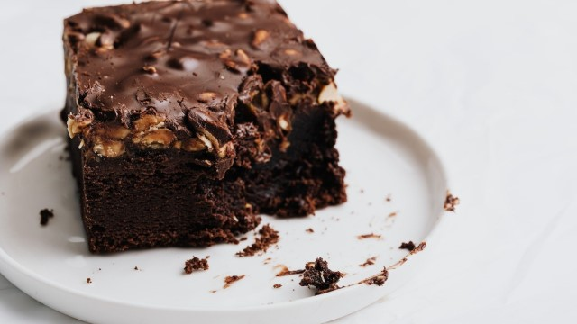

Brownie

Ingredientes
- 1 xícara de manteiga
- 1 e 1/2 xícara de chocolate em pó
- 1 e 1/4 xícara de açúcar refinado
- 3 ovos
- 1 colher de sopa de baunilha
- 1/2 xícara de cacau amargo
- 1/2 xícara de farinha de trigo
- 1 colher de sopa de sal
- 1 barra de chocolate
Modo de Preparo
- Derreta a manteiga em uma frigideira até dourar.
- Bata os ovos com açúcar até o açúcar dissolver bem.
- Adicione a farinha de trigo, o sal, o chocolate, o cacau amargo e a baunilha e misture bem.
- Coloque em uma forma e leve ao forno por 20 minutos a 180 graus.
- Verifique se o brownie já está pronto colocando um palito ou garfo. Se a massa não grudar é porque já está no ponto.
Voltar para a lista de receitas